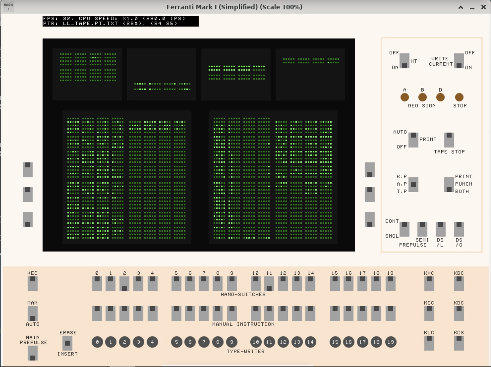
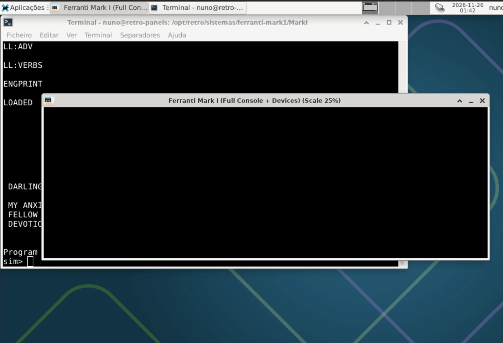
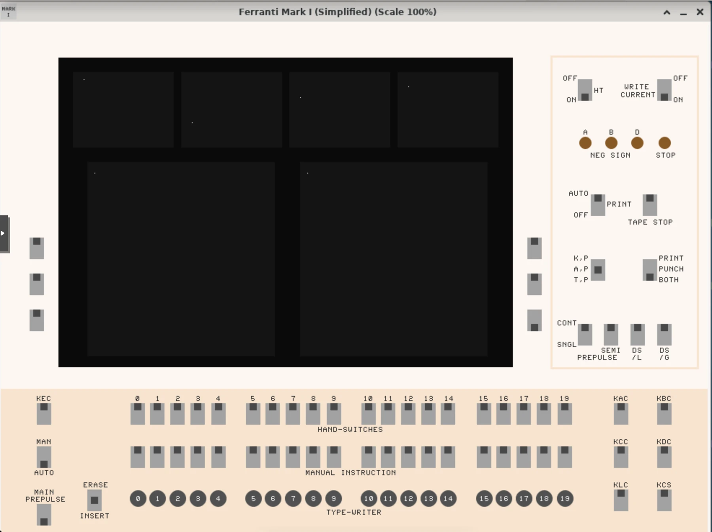
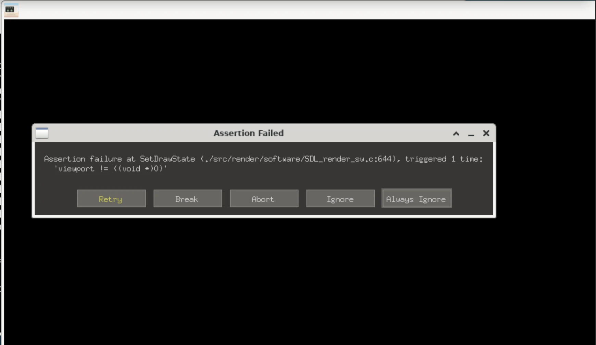

1. Uma máquina anterior aos sistemas operativos modernos
O Ferranti Mark I representa a primeira etapa da coleção de computadores a válvulas. A experiência explora o painel de operador, os tubos CRT, a fita perfurada e a execução de programas históricos. O simulador de Roberto Sancho inclui programas recuperados e demonstrações; nesta sessão foi executado Love Letters (1952).

2. Ambiente de teste
| VM | 1951 · retro-panels · Proxmox |
|---|---|
| Sistema | Debian 13 com XFCE |
| Compilador | GCC 14.2.0 |
| SDL2 | 2.32.4 |
| Emulador | Open SIMH V4.1-0 Current · commit apresentado 793149d1 |
O pacote de demonstração do autor indica Windows 7 ou superior. Optou-se por compilar o código-fonte diretamente no Debian.
apt install -y build-essential git libsdl2-dev libsdl2-image-dev libsdl2-ttf-dev libpng-dev libreadline-dev libpcap-dev unzip
mkdir -p /opt/retro/emuladores
cd /opt/retro/emuladores
git clone https://github.com/rsanchovilla/SimH_cpanel.git
cd SimH_cpanel/simh-master3. Adaptação para Linux
O alvo MarkI não tinha regra de compilação: make devolvia «Nada a fazer» apesar de não existir executável. Foi acrescentada a seguinte regra ao makefile, após cópia de segurança:
cp makefile makefile.original
cat >> makefile <<'EOF'
.PHONY: MarkI
MarkI: ${BIN}MarkI${EXE}
${BIN}MarkI${EXE}: ${MarkI} ${SIM}
${MKDIRBIN}
${CC} ${MarkI} ${SIM} ${MarkI_OPT} ${CC_OUTSPEC} ${LDFLAGS} ${CPANEL_EXTRALIBS}
EOFO GCC encontrou ainda MAX_PATH indefinido e strcpy_s indisponível. Foram feitas cópias dos ficheiros e aplicadas duas correções:
cp MarkI/MarkI_defs.h MarkI/MarkI_defs.h.bak
cp cpanel.c cpanel.c.bak
sed -i '1i #ifndef MAX_PATH\n#define MAX_PATH 260\n#endif\n' MarkI/MarkI_defs.h
sed -i 's/strcpy_s(cpvid\[ncp\].long_name, 128, title);/snprintf(cpvid[ncp].long_name, 128, "%s", title);/' cpanel.c
make MarkI -j2 CFLAGS_G="-I /usr/include/SDL2" VIDEO_USEFUL=trueA compilação terminou sem erros bloqueantes. Permaneceram avisos de conversão de ponteiro para inteiro e de variável extern inicializada; a sua relevância para a falha gráfica não está confirmada.
4. Primeira execução e painel preto
mkdir -p /opt/retro/sistemas/ferranti-mark1
unzip -o ../test_run/MarkI/Ferranti_MarkI.zip -d /opt/retro/sistemas/ferranti-mark1
cd /opt/retro/sistemas/ferranti-mark1/MarkI/sw
/opt/retro/emuladores/SimH_cpanel/simh-master/BIN/MarkI MarkI_cpanel.ini All LoveLetters run.iniO programa gerou uma carta no terminal, mas o painel completo a 25% ficou preto. O diagnóstico com strace confirmou que os PNG MarkI_State_0.png e MarkI_State_1.png eram abertos corretamente. A consola a 50% também apresentou dificuldades. A causa não foi demonstrada.

5. Configuração funcional a 100%
O modo Simplified usa escala de 100%. Com renderização por software, o painel apareceu corretamente e a execução do programa mostrou atualização dos CRT. A alteração simultânea de modo e escala impede atribuir a falha apenas ao redimensionamento.
cd /opt/retro/sistemas/ferranti-mark1/MarkI/sw
SDL_RENDER_DRIVER=software /opt/retro/emuladores/SimH_cpanel/simh-master/BIN/MarkI MarkI_cpanel.ini Simplified LoveLetters run.ini
O comando deve ser executado no terminal gráfico XFCE. Para facilitar a utilização, foi criado o atalho marki-love em /usr/local/bin. O interruptor KCS é indicado pelo autor para reiniciar a demonstração, mas a interação ainda não foi validada nesta sessão.
6. Falhas e testes em aberto
| Teste | Resultado |
|---|---|
| Compilação nativa e Love Letters | Funcional |
| Painel Simplified a 100% e CRT dinâmicos | Funcional |
| Painel All a 25% / Console a 50% | Ecrã preto |
| Experiência com painel completo / escala | Falha de segmentação |
| Renderizador SDL2 software | Assertion failure em SetDrawState, SDL_render_sw.c:644 — viewport != NULL |
| Botões, painel completo e outros programas | Por validar |

O código apresenta caminhos diferentes para atualização das texturas abaixo de 100% e a partir de 100%. É uma hipótese de investigação, não uma causa confirmada. O diagnóstico com GDB foi preparado, mas ainda não há backtrace registado. A opção funcional a 100% é preservada; Windows 7 fica apenas como alternativa.
7. Referências e experiências futuras
SIMH CPanel — Roberto Sancho · Manual do simulador Ferranti Mark I. O README do pacote descreve Scheme A, Draughts, Love Letters e os Autocodes de Glennie e Brooker. Apenas Love Letters foi validado nesta sessão.
Próximos testes: interação KCS, Scheme A Hello World, painel completo, e outros computadores com painéis interativos.